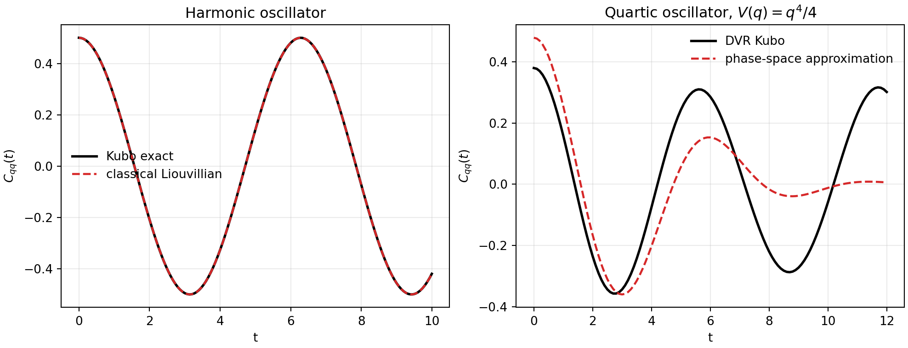

Matsubara Series - Part I
From Kubo to LSC-IVR
Matsubara dynamics starts from a problem that looks almost classical: how can we compute real-time equilibrium correlation functions while retaining the quantum Boltzmann distribution? The first useful stop is LSC-IVR, where the exact Kubo expression is mapped into phase space and then propagated with a classical Liouvillian.
Background
The Kubo-transformed correlation function for two operators \(A\) and \(B\) can be written as
The imaginary-time smearing in \(K_\beta(A)\) is what makes this object compatible with path-integral statistics. A direct classical correlation has the right phase-space intuition, but it does not in general conserve the quantum Boltzmann distribution.
Weyl representation
The Weyl transform maps an operator to a phase-space function:
After inserting the corresponding Fourier identity into the exact correlation function, one obtains a formally exact phase-space expression involving \([K_\beta(A)]_W\) and \([B(t)]_W\).
LSC-IVR approximation
The exact quantum Liouvillian contains the Moyal series,
LSC-IVR truncates this to the classical Liouvillian,
and estimates the Kubo correlation with classical phase-space propagation. This is exact for a harmonic oscillator but no longer exact for nonlinear potentials.
Workflow
- Use an exact analytic Kubo expression for the harmonic oscillator.
- Use sinc-DVR diagonalization as the quantum Kubo reference for \(V(q)=q^4/4\).
- Sample the classical Boltzmann phase-space density on a deterministic grid.
- Propagate each phase-space point with velocity-Verlet under the classical force.
- Compare \(C_{qq}(t)=\langle q(0)q(t)\rangle\) against the quantum Kubo reference.
Result

Why this sets up Matsubara dynamics
The central weakness is not that phase space is useless; the harmonic test shows that it can be exactly right. The weakness is the way the quantum Liouvillian is truncated. Matsubara dynamics changes the truncation: instead of cutting the Moyal series directly in powers of \(\hbar^2\), it keeps the smooth low-frequency imaginary-time normal modes. Part II develops that mode-space picture.
Code used in this note
- matsubara_lscivr_benchmark.py builds the harmonic and quartic benchmark figure and prints the error diagnostics.
References
- Hele, Willatt, Muolo, and Althorpe, J. Chem. Phys. 142, 134103 (2015).
- Prada, Pos, and Althorpe, J. Chem. Phys. 158, 114106 (2023).